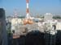

DAVID G. SIMPSON
Personal Web Site
JAPAN PHOTO ALBUM: PAGE 1
|  The view of Yokohama from my hotel room at the Yokohama Bay Sheraton. Yokohama seemed like most big cities, except that everything was very clean, the signs were all in Japanese, and everything was closed and the streets empty by about 10:00 pm. |
This is where the Esperanto congress was being held. The large sail-shaped building is a hotel; the congress was in the adjacent building. |
|
A sign at the convention center welcomes Esperanto speakers to the congress. |
I went for a walk around Rinko Park near the convention center. The park is right on the bay, from where you can see this bridge in the distance. |
|
An unusual sculpture in Rinko Park. |
Another view of Rinko Park. |
|
Esperanto theater. We got to see an avant-garde play called Galileo. |
On Wednesday August 8 the congress shut down so we could all do some sightseeing. I joined a tour group that took a bus to Tokyo. Here's one of the first sights in Tokyo: the Tokyo Tower. It's actually a little taller than the Eiffel Tower that it resembles. |
|
Scene in Tokyo, adjacent to the freeway. Tokyo is currently the largest city on Earth. |
The Tokyo Metropolitan Government Building (Tochō). The twin towers are 800 feet (45 stories) high, with an observatory on the top floor of each tower. The Esperanto tour group got to go to the top of one of the towers to see an overview of the city of Tokyo. |
|
View of Tokyo from the top of the Tokyo Metropolitan Government Building. |
Another view from the top of the Tokyo Metropolitan Government Building, with a view of a park. |
{kind=link}
{kind=link}
{kind=link}
{kind=link}
{kind=link}
{kind=link}
{kind=link}
{kind=link}
{kind=link}
{kind=link}
{kind=link}
{kind=link}
| Page 1 of 4 | Next >>> |
|---|
Contact Information
I may be contacted at: